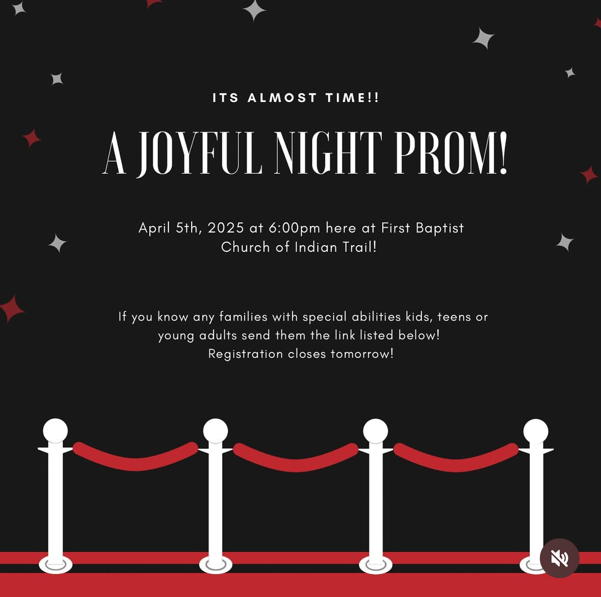
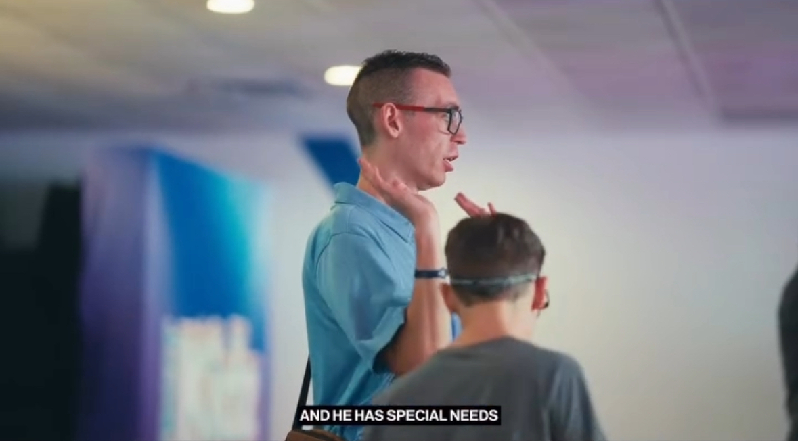
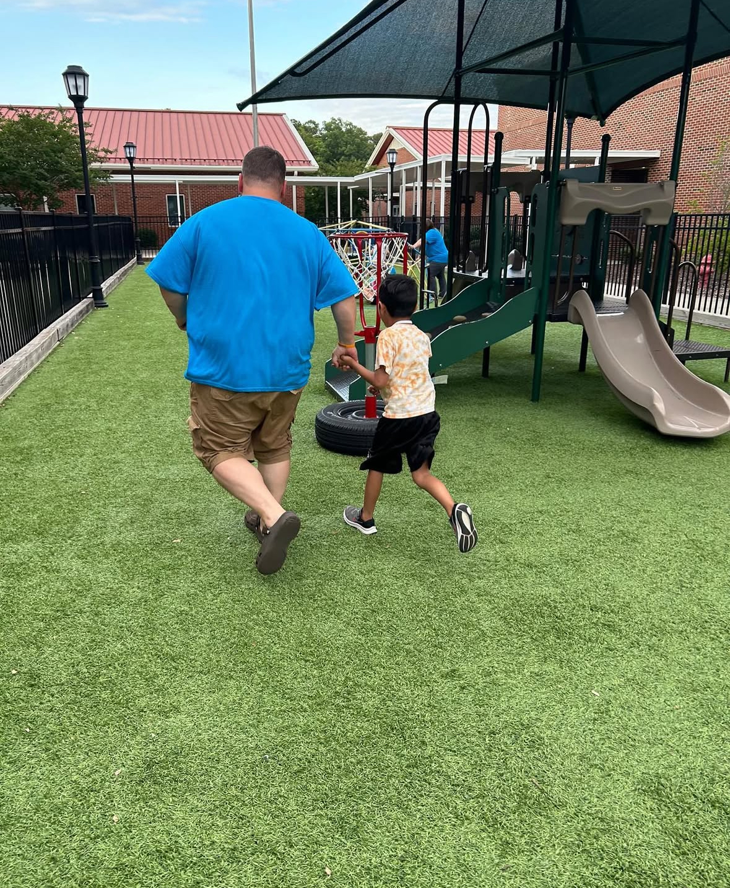

About Us
Who We Are
Bridge to Abilities is dedicated to supporting families and individuals with special needs through advocacy, awareness, and inclusive community events. Our goal is to empower and connect those in the special needs community with essential resources and support.
Advocacy and Awareness
We believe in amplifying the voices of those with special needs through advocacy events, personal stories, and awareness campaigns. Every story matters, and we are here to make sure they’re heard.



Family and Community Focus
At the heart of our organization is a commitment to creating inclusive, family-oriented events that bring the community together. We believe in providing opportunities for families to connect, share, and grow.